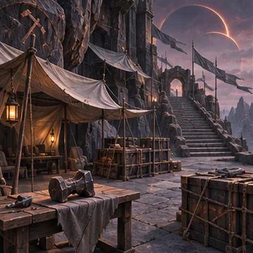
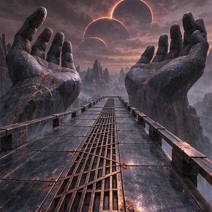
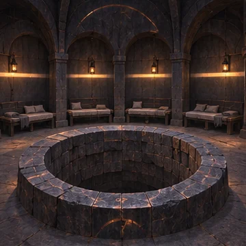
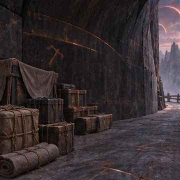
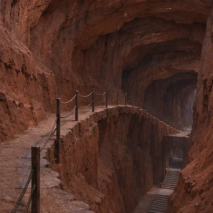

Полая орбита Аш-Кер
Каменные уступы и замкнутые залы висят вокруг чёрной глазницы звезды. Между ними тянутся ступени, цепи и полосы тусклого воздуха.

Лагерь у последней ступени
Навесы экспедиции стоят на узкой террасе. Ящики привязаны к скале, на столе лежит обломок молота, а над лестницей колышутся серые флаги.

Шлаковый пролёт
Мост из матовых плит идёт между пустыми формами огромных ладоней. В его решётке блестят тонкие металлические полосы.

Слепая пасть
Две низкие чаши стоят под закрытым каменным веком. Рядом лежат щипцы, бруски глины и шесть пустых песочных горлышек.

Колодец свидетеля
Сухой колодец окружён галереей лежанок. Свет каждого фонаря заканчивается на стене ровной полосой, словно его обрезали ножницами.

Галерея возврата
Серебристая нить толщиной с палец проходит через каменные дужки. По обе стороны идут узкие дорожки с местами для отдыха.

Двор печатей
Под открытым сводом расставлены переносные формы, защитные экраны и стойки для длинных инструментов. Пол усыпан чёрной стружкой.

Мёртвый угол
Уступ скрыт от всех внутренних огней выпуклой стеной. Здесь удобно разложить груз, но проход наружу виден лишь с самого края.

Наковальня без полудня
Чёрный диск стоит ребром в раздвоенной наковальне. На полу отражаются чужие созвездия, а наверху неподвижно висит рабочий молот.

Безлучный зев
Длинный спуск пересекает сухую шахту с глиняными стенами. Узкая пешеходная тропа уходит к нижним ступеням лестницы.

Зал незамкнутого порога
Две створки ворот не касаются друг друга. Между ними стоят пустые носилки, ручной ворот и каменная чаша размером с походный стол.